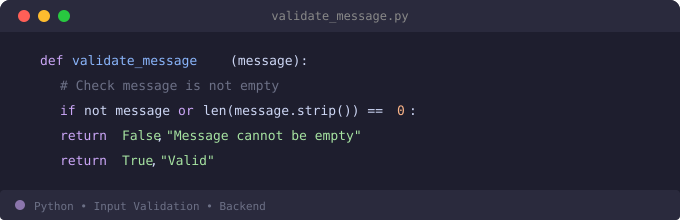
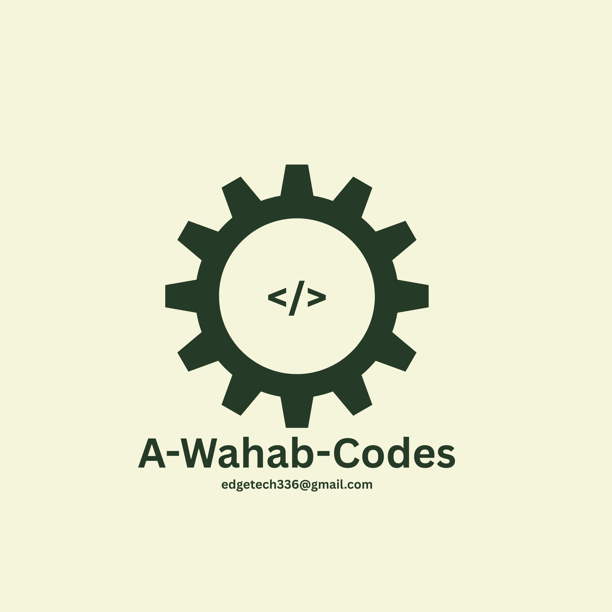

Python Input Validation
Simple validation logic for checking user input, error handling, and clean backend data processing.

Full-Stack Developer (in training) In Progress
I turn ideas into working projects while learning by building.
Learning in public while building practical projects that solve real problems.
I enjoy breaking down technical ideas into practical conversations that developers, students, and growing engineers can easily connect with and apply.
Core technologies I use in delivery, plus areas where I am actively training.
Open to project collaborations, technical partnerships, and speaking opportunities.
Tell me what you are building, who it is for, and what outcome you want. I will reply with a practical next step.
Draft your message here first. This helps you send clear, context-rich requests.
Start by sharing what you want to achieve as a business, when you need it done, and how much you're looking to spend. It helps everyone get on the same page quickly.
Share the technologies you're currently using, any challenges you're facing, what you expect to be delivered, and links to your codebase or system architecture for a smoother handoff.
What your outreach currently sounds like.